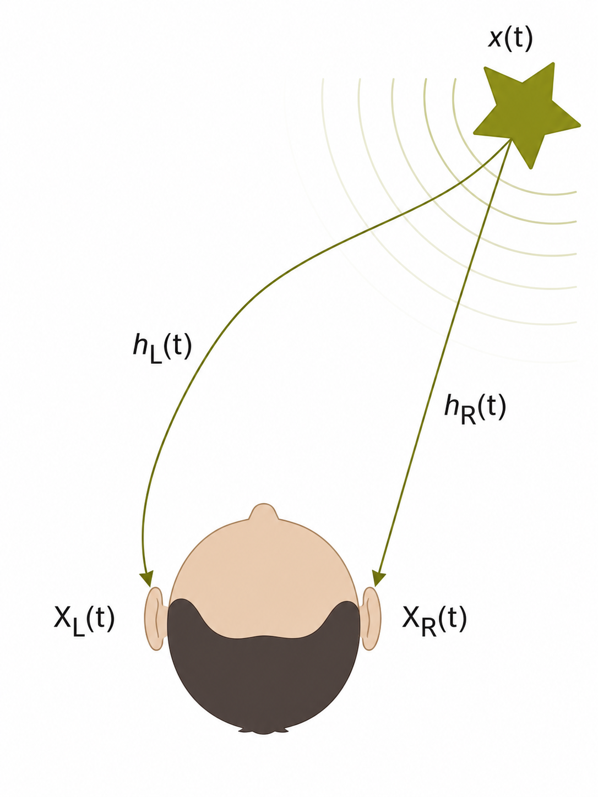
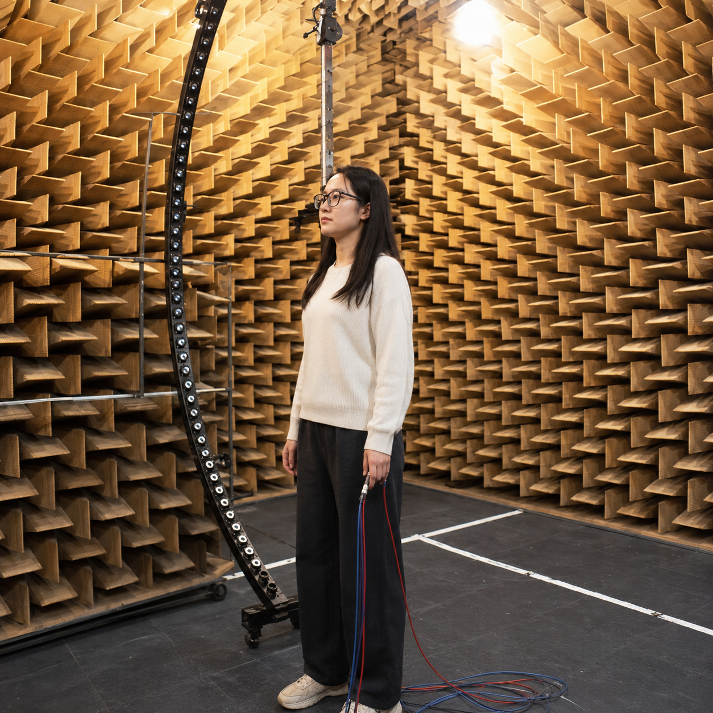
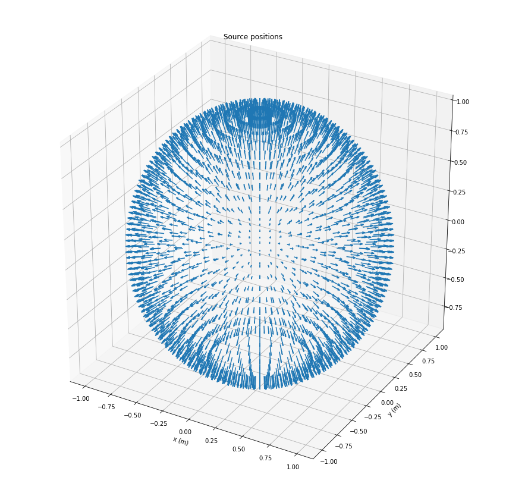
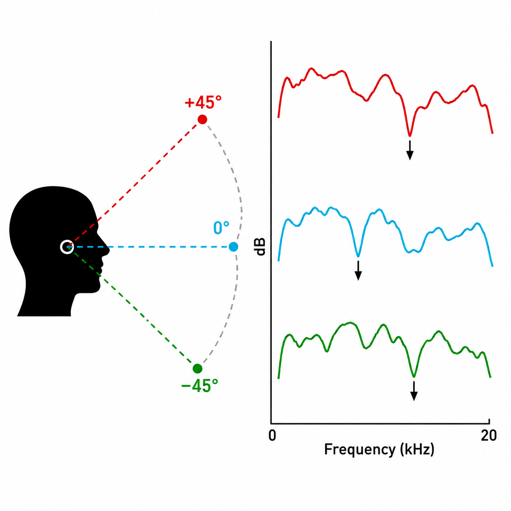

时间差与强度差
方位角和频率滑块用于观察双耳线索：低频下到达时间差更稳定，高频下头影导致的强度差更明显。
这里约定方位角 向右为正，因此右侧声源通常给出正 ITD； 是等效双耳距离， 是声速。ILD 要在同一频带内比较左右耳有效声压，符号会随左、右约定改变。
DRAFT CHAPTER / SPATIAL HEARING
本章从一个问题开始：同一条波形，为什么能听出空间和对象？随后把这个问题 依次组织 ITD/ILD、HRTF、IACC、优先效应和 ASA。
BINAURAL CUES
方位角和频率滑块用于观察双耳线索：低频下到达时间差更稳定，高频下头影导致的强度差更明显。
这里约定方位角 向右为正，因此右侧声源通常给出正 ITD； 是等效双耳距离， 是声速。ILD 要在同一频带内比较左右耳有效声压，符号会随左、右约定改变。
0.36 ms估计 ITD
4.1 dB估计 ILD
ITD + ILD当前更可用的定位线索
HRTF
头相关传递函数描述声波从某个空间方向到达左右耳入口或鼓膜附近时，被躯干、肩部、头部、耳廓和耳道共同滤波后的结果。 对方向 ， 频域 HRTF 可以写成耳处声压与自由场参考声压之比：
它不是单独的“左右响度差”或“到达时间差”，而是一个方向相关的双耳滤波器：低频相位和群延迟携带 ITD， 高频幅度谱携带 ILD，耳廓造成的谱峰、谱谷尤其影响上下、前后和外部化判断。
7.2 kHz耳廓谱凹陷位置
中等外部化个体匹配度提示
SOFAHRTF 数据交换格式

在消声室或低反射环境中，把扬声器放在已知方位和仰角，受试者或假人头耳道入口放微型麦克风。 播放 sweep、MLS 或脉冲信号，记录左右耳响应，再通过反卷积得到 HRIR。
测量时要登记坐标系、采样率、声源距离、参考点、耳道是否堵塞、麦克风位置和个体信息。 同一个方向必须得到一对左右耳响应，否则不能用于双耳渲染。
工程里常用两种等价形式：时域的 HRIR 和频域的 HRTF 。
HRIR 适合直接卷积；HRTF 适合观察幅度谱、相位、耳廓 notch、ITD/ILD 和插值后的频响连续性。 数据库通常只在离散角度网格上测量，因此“连续移动”必然涉及方向选择、插值或交叉淡化。
SOFA 是 Spatially Oriented Format for Acoustics，用 netCDF/HDF5 风格的数据结构保存空间声学数据。
对 HRTF，常见约定是把左右耳 HRIR 放在 Data.IR，把方向放在 SourcePosition，
同时保存 Data.SamplingRate、接收者朝向、坐标单位和数据库元信息。
它解决的不是“怎么渲染声音”，而是让不同实验室的 HRTF 可以用统一字段读取、比较、复现和交换。


SourcePosition，把对应左右耳响应写成 Data.IR。
连续移动声像需要在这些离散方向之间选择、插值或交叉淡化。图源：备课素材 / 10 HRTF。
基本渲染就是把单声道声源分别与目标方向的左右耳 HRIR 做卷积：
方向选择时，先把声源轨迹写成每个音频块的方位 ，再在 HRTF 网格中找最近的测量方向或做相邻方向插值。 例如声像从左前方移动到右后方时，每 10-20 ms 更新一次目标方向；更新太慢会产生跳变，更新太快但滤波器直接替换会产生 zipper noise。
实作时不要在一个采样点突然把 换成 。 更稳的做法是并行计算两个方向的双耳输出，并在一个短窗口内交叉淡化：
可用线性、raised-cosine 或 equal-power 曲线从 0 走到 1。对短 HRIR，10-50 ms 的淡化通常足以消除参数切换感； 对快速绕头运动，可以先按角度插值 HRIR/HRTF，再对输出做块级交叉淡化。最后还要检查响度守恒、前后混淆、个体 HRTF 匹配度和耳机均衡，否则声像会“贴头”或定位漂移。
IACC
IACC 是 Interaural Cross-Correlation Coefficient，即双耳互相关系数。 它先计算左右耳信号的归一化互相关函数 IACF，再在一个很短的双耳延迟范围内取最大绝对值。 这个“允许微小延迟后还能多相似”的量，正好把 ITD 补偿后的双耳相似性压缩成 0 到 1 之间的指标。
这里的 和 是左右耳声压或双耳录音信号； 是分析时间窗。房间声学里常把早期窗和晚期窗分开看：早期 IACC 更影响 apparent source width，晚期低相关能增强 listener envelopment。
中等宽度声像宽度
有空间包围包围感
IACC双耳相似度指标
如果左右耳波形在补偿微小 ITD 后仍高度相似，听觉系统可以把它解释为同一个紧凑声源的双耳投影。 这种情况下声像边界清楚，位置稳定，通常听起来更“窄”、更靠近一个明确方向。
当反射、扩散声或人工去相关处理让左右耳细节不再同步时，单一方向的解释变弱。 大脑会把能量组织成更宽的声源或包围声场，因此宽度和空间感增强，但精确定位会变差。
IACC 支撑的是“双耳相似性与空间印象”的判断，不等于完整定位模型。 它要和 ITD、ILD、HRTF 谱线索、直达声/混响比例和分析时间窗一起解释；宽带音乐、瞬态语音和晚期混响得到的 IACC 含义并不完全相同。
对真实声场、音乐和日常听觉场景，IACC 与声像宽度、空间感之间并没有确定的一一对应关系。 同样的 IACC 数值可能来自扩散混响、多个声源、频带间线索冲突、人工去相关处理或录音制式差异，听感并不必然相同。
因此复杂场景中的声像宽度和空间感更依赖高维特征：直达声/早期反射/晚期混响结构、频带相关性、动态包络、声源数量、语义对象、场景先验、头部运动和视觉绑定。 IACC 适合作为一个可计算的双耳相似度入口，但不能单独替代完整的空间感知解释。
PRECEDENCE EFFECT
优先效应也叫 precedence effect 或 law of the first wavefront。 当同一个声音先以直达声到达耳朵，随后又以墙面、地面或天花板反射声到达时，听觉系统通常不会把每个反射都听成一个新声源； 它会把短延迟反射融合进同一个听觉事件，并让定位主要跟随最先到达的波前。
一个最小模型可以写成“直达声 + 延迟反射”：
其中 是直达声到左右耳后的波形， 是反射路径的双耳波形， 是反射相对强度， 是反射相对直达声的延迟。
融合，定位由先到达声主导听觉组织状态
反射增强房间感，也可能形成回声
边界延迟和强度共同决定听感
极短延迟时，直达声和反射声在时间上几乎叠加，听觉主要感到音色、响度或梳状滤波改变。 延迟增加到几毫秒到几十毫秒范围内，反射仍与直达声融合成一个事件，但定位被先到达声支配，这就是 localization dominance。 再继续增大延迟，反射会越过 echo threshold，被听成分离的回声。
定位线索最可靠的部分通常出现在声源起始瞬间：直达声最先给出一致的 ITD、ILD 和 HRTF 谱线索。 稍后的反射虽然带来额外能量，但它的方向线索与直达声冲突；听觉系统会下调这些晚到线索的定位权重，把它们更多解释为房间信息。
Haas effect 常指延迟声与直达声融合时，延迟声可以增加响度和空间感，而定位仍偏向先到达声。 但这个边界不是固定常数：语音、点击声、音乐、频谱、反射强度和房间混响都会改变 echo threshold。 如果反射比直达声强很多，或直达声起始被掩蔽，定位就可能被反射方向拉偏。
做空间音频或房间仿真时，直达声负责清晰方向，早期反射负责房间大小、表面距离和空间感，晚期混响负责包围感。 因此不要只把“反射”当作一个延迟拷贝：需要分别控制反射的延迟、增益、方向、频谱衰减和扩散程度。
一个可操作的设计原则是：先让直达声的 HRTF/ITD/ILD 明确建立方位；再加入若干早期反射，延迟通常在几毫秒到几十毫秒之间， 增益低于直达声，并使用各自反射方向的 HRTF；最后用低相关的晚期混响增加包围感。这样学生能把“定位稳定”和“有房间感”分开理解。
AUDITORY SCENE ANALYSIS
Auditory Scene Analysis，简称 ASA，讨论的是：耳朵收到的是一个混合波形，为什么我们却能听出“说话人”“乐器”“脚步声”“房间反射”等对象。 关键不是把声压拆成物理声源的真实标签，而是把频率成分和时间片段组织成有意义的听觉流。
因此 ASA 位于本章前面线索之后：ITD/ILD/HRTF 给出方向，IACC 和优先效应解释宽度、房间感和反射融合； ASA 进一步问这些线索如何共同决定哪些声学成分属于同一个对象，哪些应该被分离成不同音流。
2 条音流感知对象数量估计
较稳定分组稳定性
ASA人类机制与机器任务的桥
同一时刻出现的频率成分，如果共享起音、基频关系、谐波结构、空间方向和相似调制，就更容易被合成为一个声源。 例如元音的多个谐波不是被听成许多纯音，而是被组织成一个说话人的一个音节。
跨时间的声音片段，如果频率接近、音色相似、节奏连续、运动轨迹一致，就容易被连成同一条 stream。 如果相邻片段频率跨度很大或空间位置跳变明显，听觉会倾向于把它们分裂成不同对象。
空间一致能帮助分组，但并不总是决定性证据。两个乐器在同一方向仍可因音色和音高分离； 同一个说话人在反射环境中也可能因为优先效应和共同调制被维持为一个对象。
对机器听觉，ASA 可以被看成一个线索融合问题。先把声信号拆成时频单元 ， 再为每个单元估计空间、起音、谐波、音色、调制等属性。两个单元越像来自同一对象，它们之间的关联权重越高：
这里 表示空间一致性， 表示同步起音， 表示谐波或音高关系， 表示共同包络或共同调制。亲和度高的单元可以被聚成同一声源轨迹；亲和度低的单元则倾向于分离。
在声源分离、说话人分离、音乐转录和声音事件检测中，模型也在做类似决定：哪些时频成分属于目标，哪些属于干扰或背景。 掩蔽估计、聚类、深度嵌入和注意力机制，都可以看成不同形式的“分组规则学习”。
如果多个声源同方向、同起音、音色相近，分组会变难；如果一个声源被强混响拉长，时间边界会变模糊； 如果视觉线索指向另一个位置，听觉对象还可能被跨模态重新绑定。
空间听觉不止回答“声音从哪来”，还回答“哪些声学证据属于同一个东西”。 ASA 把双耳线索、谱线索、时间线索和经验约束合成对象层面的解释，是从人类听觉走向机器听觉特征和任务的桥。
BOUNDARIES
侧向化的英文是 lateralization。它和 localization 不完全一样：localization 是判断外部声源在空间中的位置； lateralization 更强调耳机、双耳信号或实验刺激中，声像在头内左右轴上的偏移。例如一个声音听起来在头中央、偏左耳、偏右耳， 或在两耳之间移动，这就是典型的侧向化判断。
对单频纯音，侧向化可以主要由 ITD 或 ILD 控制；但真实复杂声通常是宽带、瞬态、谐波和包络共同存在。 低频成分可能给出稳定相位差，高频成分给出头影强度差，起音瞬间又会强烈影响初始方向感。 如果这些频段给出的双耳线索彼此一致，声像会集中、稳定；如果不同频段线索冲突，声像可能变宽、分裂、漂移，甚至出现“低频在一边、高频在另一边”的融合困难。
这就是为什么复杂声不能只用一个单频 ITD/ILD 数值解释。研究和工程中常要分频带估计双耳线索，再考虑频带权重、包络同步、起音支配以及听觉系统的跨频整合。 对空间音频渲染来说，若 HRTF、耳机均衡或双耳相位处理不一致，听感上会表现为声像贴头、中心不稳、左右移动不连续或声源宽度异常。
听觉距离 perception of auditory distance 依赖多种弱线索共同推断。近距离时，整体声级、低频近场效应、双耳差异和头部运动可能有帮助； 在房间中，直达声与混响声的比例 direct-to-reverberant ratio 往往更关键：直达声相对强，通常更近；混响占比高，通常更远。 高频空气吸收、声源熟悉度、语音响度经验和房间先验也会参与判断。
高度 elevation 主要依赖耳廓造成的方向相关谱峰和谱谷，尤其是中高频 notch 随仰角变化的位置。 前后 front-back 判断也依赖类似的谱线索和头部运动产生的动态变化。问题在于，前方和后方的 ITD/ILD 可能非常相近， 只靠左右耳时间差和强度差很容易落在同一个 cone of confusion 上，因此会出现前后混淆、上下混淆和内外部化失败。
这些机理到现在也不是一个完全统一的闭式模型。个体耳廓差异很大，HRTF 不匹配会显著影响高度和前后判断； 房间反射既能提供距离信息，也会破坏清晰定位；头部运动、视觉信息和经验学习又会动态修正判断。 所以学术界通常把距离、高度、前后感知看成多线索贝叶斯整合或任务依赖推断，而不是某一个固定公式能解释完的现象。

视觉会系统性改变听觉定位。最典型的是 ventriloquism effect：当视觉对象的位置与声音位置有小到中等偏差时， 听者常把声音位置拉向看见的对象。影院、视频会议和舞台扩声都利用了这一点：声音实际从扬声器来，但只要视听时间和语义匹配， 我们会把声音绑定到屏幕人物或舞台表演者身上。
多模态交互不是简单“视觉覆盖听觉”。大脑会根据可靠性给不同通道分配权重：视觉空间分辨率通常高，所以影响方位判断强； 听觉时间分辨率高，所以在节奏、同步和事件起始上更有优势。当视觉和听觉在时间上同步、语义上属于同一事件、空间偏差没有大到不可解释时， 系统倾向于把它们绑定成一个多模态对象。
这种交互也会带来边界和错觉。视听偏差过大时会解绑定，听者会感到“声画分离”；长期暴露在固定偏差下会产生 ventriloquism aftereffect， 后续纯听觉定位也可能被重新校准。对空间音频、AR/VR 和机器人听觉来说，这意味着定位不能只看麦克风或耳机信号： 还要考虑屏幕位置、头部姿态、视觉目标、语义匹配和视听同步，否则用户会听到位置正确但感知上“不对”的声音。
学习路线
机器特征表示已拆出为独立 Chapter，避免把“人怎么组织声音”和“机器怎么取特征”混在同一页里。